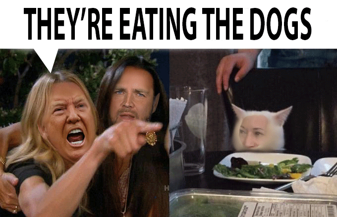
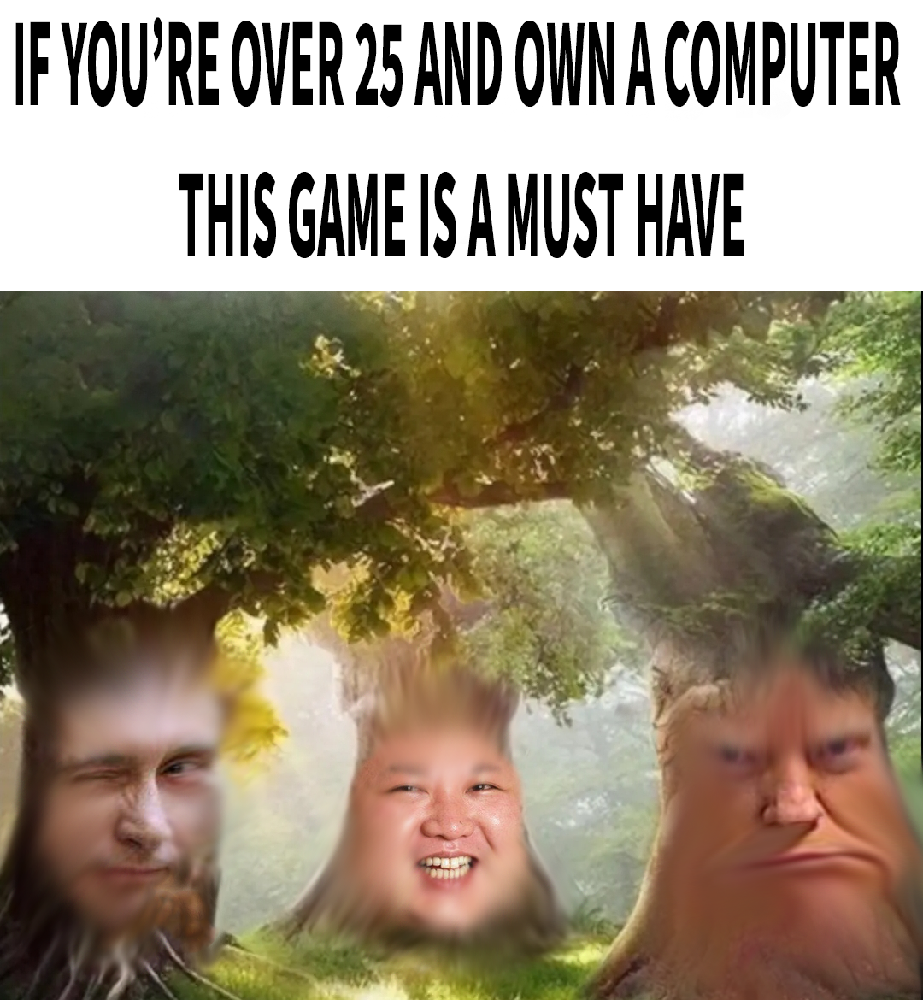

Meme Mashup

The combination of these various memes form a new meaning that showcases Trump's hostility towards Haitian immigrants during the recent political debate. Kamala's reaction is there to emphasize the absurdity of his remarks and represent how one viewing this gif may even feel. The fact that Kamala's face is on the cat is ironic considering that Trump believes he is defending "the cats."
The text is a reference to what Trump said in the recent debate.
Source
Kamala's reaction in itself is a meme.
Source
The images of Trump and his sidekick come from:
Source (Trump)
Source (Sidekick)
The act of speech bubbling in itself is a meme (prevalent throughout Twitter, and no I'm not calling it "X")
Source
The template is from the classic Woman Yelling at Cat meme.
Source

First and foremost, I would like to apologize to all the wise mystical trees out there. This is not meant to mock wise mystical trees, for my intention was instead to mock right-wing figures. Additionally, this image in no way, shape, or manner is supposed to represent a connection between wise mystical trees in general and fascism. However, the meme itself originates from the fact that someone out there on the internet tried to deceive people by creating an ad that wasn't even a real game involving these trees. Therefore, this meme I have crafted takes that meaning and combines it with the faces of modern day authoritarianism and how deceptive these fascist figures can be towards the citizens of their countries (except for Trump who sucks at hiding anything).
Wise mystical tree meme:
Source
Trump's mugshot:
Source
Putin winking meme:
Source
This article explains the origins of the Kim Jong Un face meme:
Source